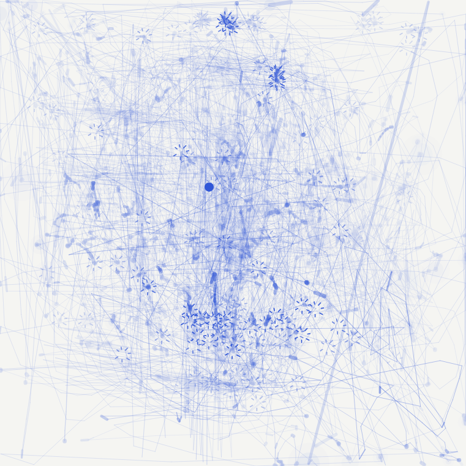

MEF University
Istanbul, TürkiyeBachelor’s Degree in Architecture (Double Major)
An astronomical digital observatory configuring five foundational investigations, practice center EG, and the mythological story of the Pleiades (Messier 45)—smoothly unfolding into the complete 12-project triangular spatial map.

“How can we make this labour visible again?”
A counter-monument and living civic archive spatializing the invisible bodily labor, collective memory, and forgotten human costs of urban infrastructure.

“Is doing nothing doing something?”
A responsive street-level sanctuary examining non-human feline agency, temporal pauses, and interspecies coexistence in urban Istanbul.

“What remains of the movements we forget?”
An anonymous participatory monument recording involuntary visitor cursor movements and pauses into a living digital surface and persistent spatial archive.

“Is there death because there is life?”
An unbaked clay burial vessel and stepped ceremonial terrace interrogating material impermanence and the return of human memory to soil cycles.

“How many microplastics can we eat in a day?”
Fully biodegradable agar and starch bio-composite surfaces challenging petrochemical permanence and consumer packaging contamination.
Rather than treating architecture as the passive execution of predetermined briefs, my methodology approaches space as an epistemic site—a place where cultural, economic, and material assumptions can be systematically dismantled and re-examined.
Through the triangulation of Critical Inquiry, Contextual Research, and Experimental Thinking, every project develops its own discursive tools: from living biomaterial testbeds and material forensics to interactive spatial simulations and participatory archives.
Just as our spatial constellation map organizes projects across three conceptual poles, the design process operates as a dynamic feedback loop between these three interdependent modes of investigation:
“Architecture is neither pure ideological critique nor indifferent physical construction: it is an epistemic feedback loop.”
Rather than executing predetermined briefs, my architectural methodology operates through perpetual tension between ethical interrogation, physical matter, and site forensics. Every inquiry unearths dormant memories; every material prototype tests speculative justice; every spatial encounter invites the public to reconsider the ordinary.
A successful spatial project does not close conversation with an authoritative answer; it sharpens the inquiry and equips visitors with new ways of seeing the everyday.
Materials are not static, disposable surfaces. They respire, conduct heat, weather, and decompose. Designing with materiality means designing with time and mortality.
Space must accommodate overlooked laborers, stray organisms, and fragile ecologies. Architectural form is judged by how generously it shares room with the vulnerable.
High-level philosophical and psychological questions must be tested through real physical touch, sensory thresholds, and rigorous spatial prototypes.
I approach design as a way to examine the assumptions and systems shaping how people perceive, inhabit, and relate to the world. Drawing on philosophy and psychology, I begin by questioning the brief itself: whose perspectives it centers, what it leaves unspoken, and what possibilities it overlooks.
Through research, spatial design, and interactive media, I translate these inquiries into tangible experiences that invite reflection and connection. I explore biomaterials and emerging systems as tools for this work, asking how they can make hidden conditions perceptible and open new ways of seeing, understanding, and engaging with our surroundings.
Words are really important for her. She likes to give meaning to every word she uses in her projects. To understand her mind you need to understand her words first.
Completed training in coding and game development with Unity, game art, game UI/UX, and AI-assisted workflows.
Completed training in Design and Production, Robotics and Coding, Electronics Programming, Internet of Things (IoT), Advanced Robotics, Software Technologies, and Cybersecurity.
Contributed to the interior design and phasing strategy for the competition proposal, producing high-detail 3D models, technical drawings, and architectural renders.
Contributed to the interior design and physical implementation of an Intimissimi Uomo retail store at Kanyon, following the project from initial design development through on-site execution and completion.
Reviewed and graded assignments for DGD 101: Introduction to Game Design, evaluating student work according to course expectations and design guidelines.
Assisted with course material preparation and attendance tracking for a second-year History and Theory of Interior Design I course.
Researching and documenting how fire reacts to different architectural materials and how it spreads dynamically through school buildings. Creating a 1:1 detailed 3D model of MEF University to implement realistic fire propagation and emergency evacuation simulations based on empirical data.
Developed a proposal to address limited planting space in an existing patio, integrating new growing areas while preserving and highlighting the patio’s existing character.
Contributed directly to the participatory design process and physical hands-on timber construction of a schoolyard resting, play, and reading area for Lütfi Banat Primary School.